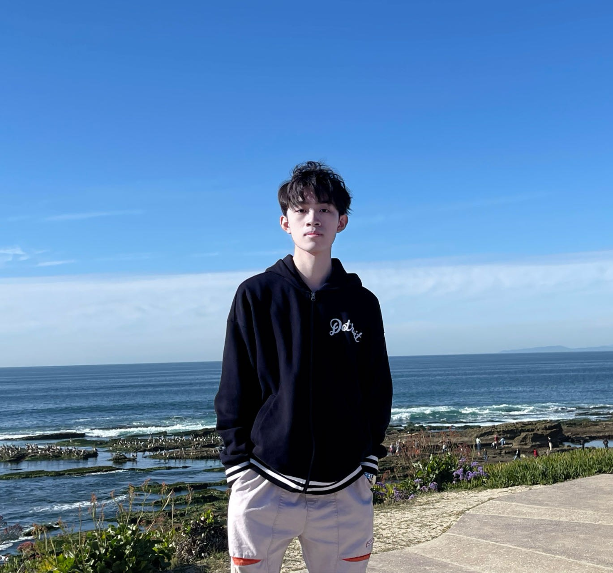
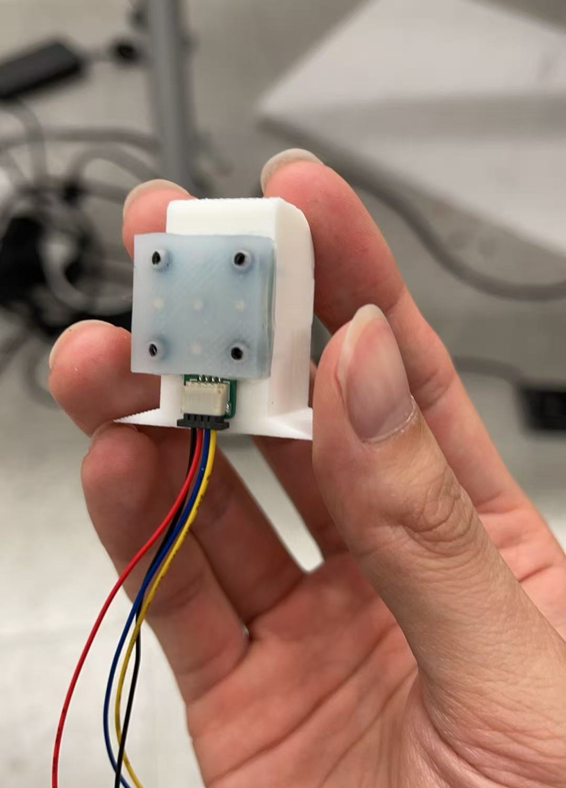
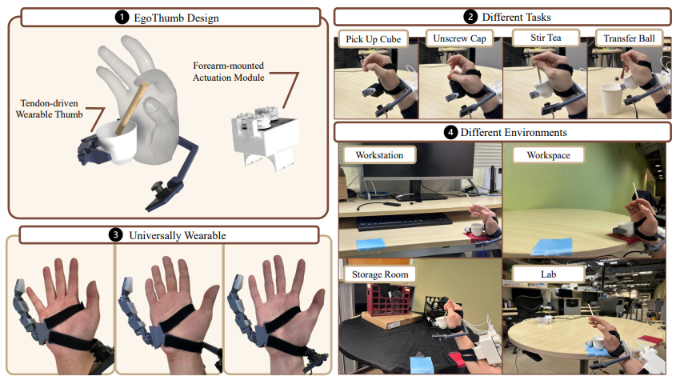

Robotics | Embodied AI | Multimodal Sensing
I am interested in developing intelligent robotic systems that can perceive, learn, and interact with the physical world through multimodal sensing and robot learning.

I am a robotics researcher interested in embodied intelligence, robotic manipulation, multimodal sensing, and robot learning. My research focuses on enabling robots to better understand and interact with the physical world by combining perception, physical sensing, and learning-based methods.

I developed an accessible elastomer-based magnetic tactile sensor for robotic fingertips. The sensor measures changes in the magnetic field caused by contact deformation and uses learning-based calibration to estimate 3-axis contact forces.
EgoThumb is a compact tendon-driven supernumerary robotic thumb designed to enable one hand to perform tasks that would normally require two hands.

IROS 2026
M.S. in Electrical and Computer Engineering
B.S. in Electrical and Computer Engineering
La Jolla, CA, USA
Robotics / Embodied AI Research Intern
Worked on sensing and learning-based manipulation for embodied robotic systems, with experience spanning physical sensor evaluation and sim-to-real policy deployment.